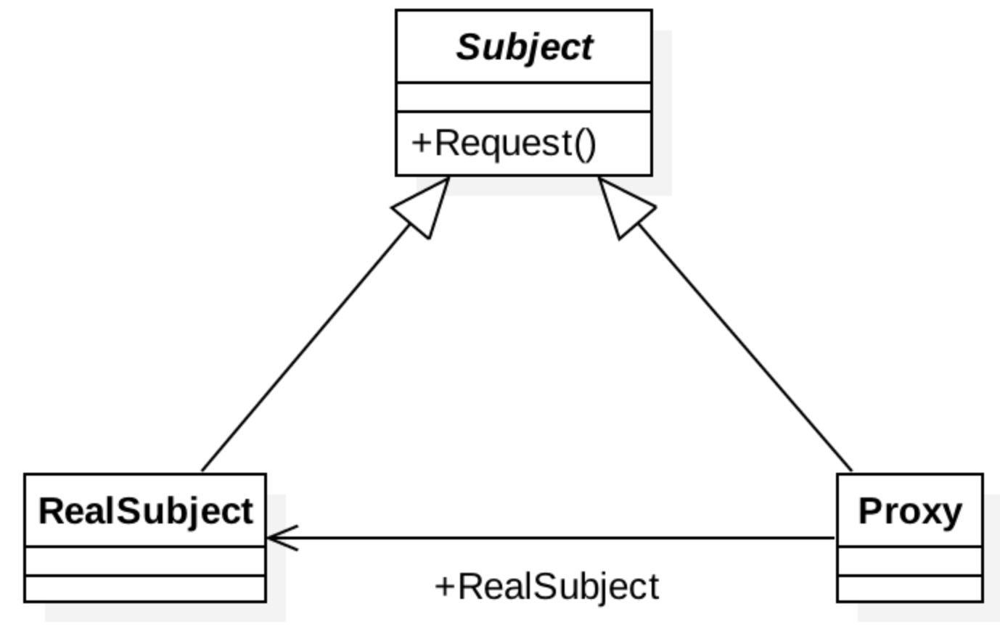

概述
- 因为某个对象消耗太多资源，而且的代码并不是每个逻辑路径都需要此对象，曾有过延迟创建对象的想法吗(if 和 else 就是不同的两条逻辑路径)?
- 有想过限制访问某个对象，也就是说，提供一组方法给普通用户，特别方法给管理员用户?
以上两种需求都非常类似，并且都需要解决一个更大的问题：如何提供一致的接口给某个对象让它可以改变其内部功能，或者是从来不存在的功能？可以通过引入一个新的对象，来实现对真实对象的操作或者将新的对象作为真实对象的一个替身，即代理对象。它可以在客户端和目标对象之间起到中介的作用，并且可以代理对象去掉客户不能看到的内容和服务或者添加客户需要的额外服务。
例子 1：经典例子就是网络代理，想访问 facebook 或者 twitter，如何绕过 GFW，找个代理网站。
例子 2：可以调用远程代理处理一些操作如图：
问题
怎样才能在不直接操作对象的情况下，对此对象进行访问?
解决方案
代理模式：为其他对象提供一种代理，并以控制对这个对象的访问。
而对一个对象进行访问控制的一个原因是为了只有在我们确实需要这个对象时才对它进行创建和初始化。它是给某一个对象提供一个替代者(占位者)，使之在 client 对象和 subject 对象之间编码更有效率。代理可以提供延迟实例化(lazy instantiation)，控制访问等等，包括只在调用中传递。一个处理纯本地资源的代理有时被称作虚拟代理。远程服务的代理常常称为远程代理。强制控制访问的代理称为保护代理。
模式的组成
代理角色(Proxy)
保存一个引用使得代理可以访问实体。若 RealSubject 和 Subject 的接口相同，Proxy 会引用 Subject。提供一个与 Subject 的接口相同的接口，这样代理就可以用来替代实体。控制对实体的存取，并可能负责创建和删除它。
其他功能依赖于代理的类型：
RemoteProxy 负责对请求及其参数进行编码，并向不同地址空间中的实体发送已编码的请求。
VirtualProxy 可以缓存实体的附加信息，以便延迟对它的访问。
ProtectionProxy 检查调用者是否具有实现一个请求所必需的访问权限。
抽象主题角色(Subject)
定义真实主题角色 RealSubject 和抽象主题角色 Proxy 的共用接口，这样就在任何使用 RealSubject 的地方都可以使用 Proxy。代理主题通过持有真实主题 RealSubject 的引用,不但可以控制真实主题 RealSubject 的创建或删除，可以在真实主题 RealSubject 被调用前进行拦截,或在调用后进行某些操作
真实主题角色(RealSubject)
定义了代理角色(proxy)所代表的具体对象
适用性
在需要用比较通用和复杂的对象指针代替简单的指针的时候，使用 Proxy 模式。下面是一些可以使用 Proxy 模式常见情况：
- 远程代理（RemoteProxy）为一个位于不同的地址空间的对象提供一个本地的代理对象。这个不同的地址空间可以是在同一台主机中，也可是在另一台主机中，远程代理又叫做大使(Ambassador)
- 虚拟代理（VirtualProxy）根据需要创建开销很大的对象。如果需要创建一个资源消耗较大的对象，先创建一个消耗相对较小的对象来表示，真实对象只在需要时才会被真正创建。
- 保护代理（ProtectionProxy）控制对原始对象的访问。保护代理用于对象应该有不同的访问权限的时候。
- 智能指引（SmartReference）取代了简单的指针，它在访问对象时执行一些附加操作。
- Copy-on-Write 代理：它是虚拟代理的一种，把复制（克隆）操作延迟到只有在客户端真正需要时才执行。一般来说，对象的深克隆是一个开销较大的操作，Copy-on-Write 代理可以让这个操作延迟，只有对象被用到的时候才被克隆。
Proxy 模式在访问对象时引入了一定程度的间接性。根据代理的类型，附加的间接性有多种用途： - RemoteProxy 可以隐藏一个对象存在于不同地址空间的事实。也使得客户端可以访问在远程机器上的对象，远程机器可能具有更好的计算性能与处理速度，可以快速响应并处理客户端请求。
- VirtualProxy 可以进行最优化，例如根据要求创建对象。即通过使用一个小对象来代表一个大对象，可以减少系统资源的消耗。
- ProtectionProxies 和 SmartReference 都允许在访问一个对象时有一些附加的内务处理（Housekeepingtask）。
Proxy 模式还可以对用户隐藏另一种称之为写时复制（copy-on-write）的优化方式，该优化与根据需要创建对象有关。拷贝一个庞大而复杂的对象是一种开销很大的操作，如果这个拷贝根本没有被修改，那么这些开销就没有必要。用代理延迟这一拷贝过程，我们可以保证只有当这个对象被修改的时候才对它进行拷贝。在实现 copy-on-write 时必须对实体进行引用计数。拷贝代理仅会增加引用计数。只有当用户请求一个修改该实体的操作时，代理才会真正的拷贝它。在这种情况下，代理还必须减少实体的引用计数。当引用的数目为零时，这个实体将被删除。copy-on-write 可以大幅度的降低拷贝庞大实体时的开销。
代理模式的优点：
代理模式能够协调调用者和被调用者，在一定程度上降低了系统的耦合度。
代理模式的缺点：
由于在客户端和真实主题之间增加了代理对象，因此有些类型的代理模式可能会造成请求的处理速度变慢。
实现代理模式需要额外的工作，有些代理模式的实现非常复杂。
结构

实现
/**
* 定义了RealSubject和Proxy共同的接口，在任何使用RealSubject的地方都可以使用代理
*/
public abstract class Subject {
public abstract void request();
}
/**
* 被代理对象
*/
public class RealSubject extends Subject {
@Override
public void request() {
System.out.println("真实请求!");
}
}
/**
* 对象代理
*/
public class Proxy extends Subject {
private RealSubject realSubject;
public Proxy(RealSubject realSubject){
this.realSubject = realSubject;
}
@Override
public void request() {
realSubject.request();
}
}
/**
* 测试
*/
public class ProxyTest {
@Test
public void test() {
RealSubject realSubject = new RealSubject();
Proxy proxy = new Proxy(realSubject);
proxy.request();
}
}
## 结果:
真实请求!
代理模式与其他相关模式
- 适配器模式 Adapter：
适配器 Adapter 为它所适配的对象提供了一个不同的接口。相反，代理提供了与它的实体相同的接口。然而，用于访问保护的代理可能会拒绝执行实体会执行的操作，因此，它的接口实际上可能只是实体接口的一个子集。 - 装饰器模式 Decorator：
尽管 Decorator 的实现部分与代理相似，但 Decorator 的目的不一样。Decorator 为对象添加一个或多个功能，而代理则控制对对象的访问。
总结
代理模式在很多情况下都非常有用，特别是想强行控制一个对象的时候，比如：延迟加载，监视状态变更的方法等等
“增加一层间接层”是软件系统中对许多负责问题的一种常见解决方法。在面向对象系统中，直接使用某些对象会带来很多问题，作为间接层的 proxy 对象便是解决这一问题的常用手段。